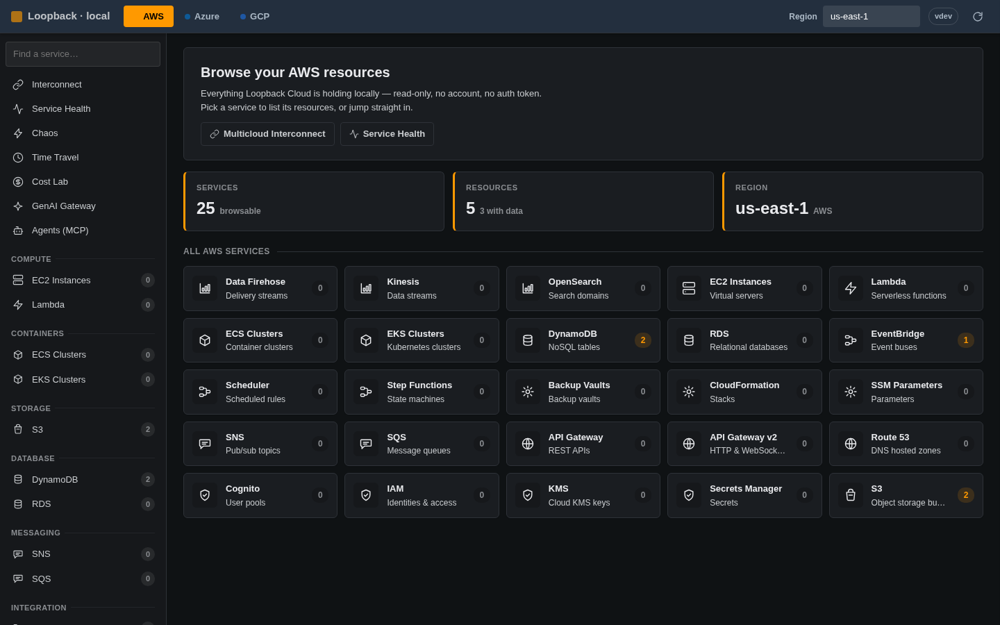
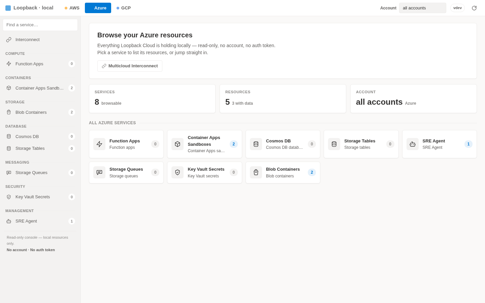

Loopback Cloud runs AWS, Azure, and GCP on your machine so agents — and the people
building them — provision and stress real resources over MCP with zero spend and zero blast
radius. The same SDKs, CLIs, and IaC you already use, behind one unified console with a gated
multicloud interconnect. No account, no auth token, no feature gates. Just docker compose up.
# one stack — AWS, Azure & GCP on localhost $ docker compose up ✓ AWS ready on :4566 ✓ Azure ready on :4577 ✓ GCP ready on :4588 $ aws s3 mb s3://demo # AWS $ az storage container create # Azure $ gcloud storage buckets create # GCP $ claude mcp add loopback :4566/_loopback/mcp ✓ agent connected — 42 tools, zero blast radius
Everything you — or your AI agent — need to build, test, and demo cloud apps. Local AWS, Azure, and GCP on 127.0.0.1 with SigV4, MCP tools, interconnect 403 gates, and labs — fast, free, and offline-capable.
Browse AWS, Azure, and GCP resources side by side at /_loopback/console — S3 buckets, Blob containers, Cloud Storage buckets, Lambda, Functions, and Pub/Sub topics in vendor-styled themes.
Copy ARNs, endpoints, and IDs for scripts; watch Cost Lab meters, toggle chaos, and inspect interconnect status without signing into three vendor portals.
Point the AWS, Azure, and GCP SDKs, CLIs, Terraform, CDK, and OpenTofu at localhost:4566, :4577, and :4588. Keep your code — just change the endpoint.
SigV4-signed AWS requests, Azure Resource Manager templates, and gcloud commands work against the same in-process and Docker-backed engines the MCP server drives.
A GraalVM native image with a ~24 ms cold start and ~13 MiB idle footprint. Fast enough to spin up fresh in every test.
Model cross-cloud connectivity like AWS Interconnect — cross-cloud calls return 403 until /_loopback/interconnects/authorize opens a link from the AWS hub to Azure or GCP.
Chaos can sever authorized links to test failover. No VPC peering, ExpressRoute, or Cloud Interconnect configuration required.
No account, no telemetry, no outbound calls. Works in air-gapped CI and on a plane. Fake credentials are fine — any non-empty value.
Ship the live stack to your team: HTTPS via Let's Encrypt, the console behind auth, all from one Docker Compose file.
Loopback Cloud models AWS Interconnect — multicloud as a hub-and-spoke.
The AWS hub on localhost:4566 owns the control plane; Azure (:4577) and GCP (:4588) each run an interconnect gateway. Until a link is authorized, a Lambda calling Blob Storage or Pub/Sub reaching SQS gets a native-shaped 403 AccessDenied — the same shape your SDK retry logic already handles.
403 until a link exists — and chaos rules can sever or slow a live link.azure or gcp./_loopback/interconnects/authorize and the same call now returns 200.Built-in control planes that turn all three clouds into a lab — drive them from an AI agent over MCP, the console, or a tiny /_loopback/* API. Each is inert until you switch it on.
A built-in Model Context Protocol server at /_loopback/mcp lets AI agents build real infra, inspect every cloud, and drive every lab — 85 tools (42 AWS / 24 Azure / 19 GCP), zero spend, zero blast radius.
Structured JSON responses map to /_loopback/* and cloud-native APIs so agents chain provision, chaos, clock, cost, snapshot, interconnect, and GenAI steps reliably.
Bedrock Converse / ConverseStream / InvokeModel / InvokeModelWithResponseStream, Azure OpenAI, and Vertex AI — one offline gateway (deterministic, canned, or Ollama) with token-cost simulation. Grok 4.6 on Bedrock (xai.grok-4.6) and Vertex (grok-4.6 / publishers/xai). Azure has no official Grok.
Inject latency and native-shaped errors into any service, in any of the three clouds — and sever or slow cross-cloud links — to test retries, timeouts, and failover.
A virtual clock in every cloud. Fast-forward and tokens expire, TTL'd items vanish, schedules fire, hidden queue messages reappear — or freeze time for deterministic tests.
A live per-service cost meter and what-if projector — wired to the clock, so you can watch a month of spend accrue in seconds.
Export emulator state via /_loopback/state/export and restore anywhere — git for multicloud state. Replay destructive agent runs safely.
/_loopback/why-403 diagnoses SigV4 denials with the exact IAM statement and condition key that blocked the call.
$ curl -s localhost:4566/_loopback/chaos -H 'Content-Type: application/json' \ -d '{"service":"dynamodb","errorCode":"ThrottlingException","probability":0.5}' $ aws dynamodb list-tables An error occurred (ThrottlingException): Chaos fault injected # retries, backoff, and circuit breakers — finally testable. Clear with one DELETE.
$ curl -s -X POST localhost:4566/_loopback/clock/advance \ -H 'Content-Type: application/json' -d '{"days":30}' {"instant":"…+30 days","mode":"offset"} # 30 days later: STS tokens expired, DynamoDB TTLs swept, schedules fired — # and on Azure, hidden queue messages are visible again.
$ curl -s localhost:4566/_loopback/costs {"runRate":{"perHour":0.0104,"perMonth":7.59},"monthToDate":2.31,"byService":[…]} $ curl -s 'localhost:4566/_loopback/costs/whatif?scale=10&months=6' {"baselinePerMonth":7.59,"projectedPerMonth":75.92,"projectedTotal":455.52} # freeze the clock at month-end and the meter shows a full month of spend
# Bedrock — ConverseStream / InvokeModelWithResponseStream (EventStream, not 501) $ curl -s localhost:4566/model/anthropic.claude/converse-stream -d '{"messages":[…]}' # Grok 4.6 on Bedrock (xai.grok-4.6) — no official Grok on Azure OpenAI $ curl -s localhost:4566/model/xai.grok-4.6/converse -d '{"messages":[…]}' # Azure OpenAI — add "stream":true for SSE chunks $ curl -s localhost:4577/openai/deployments/gpt-4o/chat/completions -d '{"messages":[…]}' # Vertex — publishers/xai grok-4.6, or Gemini streamGenerateContent $ curl -s localhost:4588/v1/projects/p/locations/us/publishers/xai/models/grok-4.6:generateContent # one offline gateway behind all three — deterministic in CI, or a real local Ollama model
$ curl -s localhost:4566/_loopback/mcp -H 'Content-Type: application/json' -d '{ "jsonrpc":"2.0","id":1,"method":"tools/call", "params":{"name":"create_bucket","arguments":{"name":"agent-made"}}}' {"result":{"structuredContent":{"bucket":"agent-made","created":true}}} # 42 AWS / 24 Azure / 19 GCP tools: inspect, provision, chaos, clock, GenAI
$ curl -s localhost:4566/_loopback/state/export > snapshot.json # … run a destructive test, break everything … $ curl -s localhost:4566/_loopback/state/import --data-binary @snapshot.json {"restoredEntries":128,"skippedStores":0} # every service, every account — back exactly as it was
Start AWS, Azure, and GCP locally with a single command.
docker compose up
Use the SDKs and CLIs you already have. Credentials can be anything.
export AWS_ENDPOINT_URL=
http://localhost:4566
Confirm what got created and copy IDs, ARNs, and endpoints.
/_loopback/console → pick a cloud
Point any MCP client at the built-in server. It can build, break, and bill — all locally.
claude mcp add loopback
:4566/_loopback/mcp

localhost:4566/_loopback/console
61 AWS · 30 Azure · 26 GCP. Real Docker-backed engines where fidelity matters, fast in-process emulation everywhere else — including DynamoDB SearchVectors and an AI suite in every cloud.
= real Docker-backed engine · everything else runs in-process
LocalStack's community edition sunset in March 2026 — auth tokens required, security updates frozen. Loopback Cloud stays free, fast, and open.
| Capability | Loopback Cloud | LocalStack Community |
|---|---|---|
| Auth token required | No | Yes |
| Security updates | Active | Frozen |
| Cold start | ~24 ms | ~3.3 s |
| Idle memory | ~13 MiB | ~143 MiB |
| Azure + GCP emulation | Yes | No |
| Chaos · time travel · cost lab · snapshots | Yes | No |
| MCP server + GenAI gateway | Yes | No |
| License | MIT | Restricted |
Drop-in friendly: point AWS_ENDPOINT_URL at localhost:4566 and keep your SDKs, CLIs, and IaC.
One Compose file brings up all three emulators behind a reverse proxy with automatic HTTPS. Share a single, always-on sandbox for demos, integration tests, and onboarding — on your own infrastructure.
/, console at /consoleAWS, Azure, and GCP on your machine in seconds — no account, no auth token, no spend. A cloud your agent can break without breaking anything.